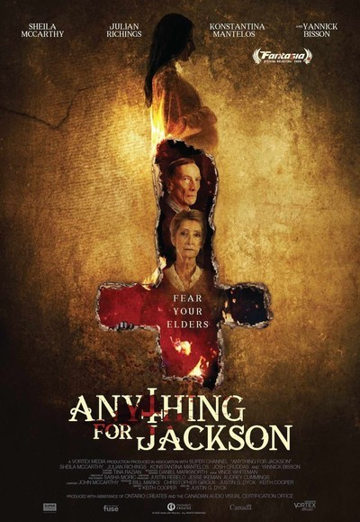
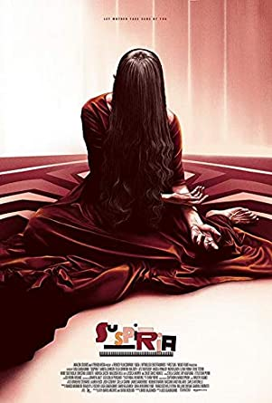

Have you ever found yourself scrolling mindlessly trying to find something good to watch. You stumble across something and think it might be good? You do a quick search only to find a long, drawn out review that gives away the plot? That's where we come in!
Here you will find quick, spoiler free reviews. We watch all the good and bad stuff, so you don't have to! We will give you a brief review, tell you where it's streaming and let you know if it's worth checking out or not. We hope you enjoy!
| Ratings | ||||
| 🎃 - Poor | 🎃🎃 - Okay | 🎃🎃🎃 - Good | 🎃🎃🎃🎃 - Great | 🎃🎃🎃🎃🎃 - Classic |
Rating: 🎃🎃🎃🎃
Anything for Jackson is a 2019 Shudder Exclusive film that premiered on Shudder on December 3rd. This film, similar to The Lodge doesn't have many locations, but is so beautifully shot and atmospheric, that you won't miss it. The movie brings together feelings of dread, suspense and a good old fashioned ghost story. If this sounds like something you're interested in, then I would stop what you're doing and hop over to Shudder to enjoy Anything for Jackson, which made my top 3 horror films of the year.
In what I would call an original ghost story that packs quite the punch in 97 minutes, "Anything for Jackson" is a breath of fresh air in a year filled with letdowns and movies pushed back indefintely. If you haven't already, I invite you to turn down your lights, head over to Shudder and see just how far the Walsh's will go in Anything for Jackson.
This film is currently streaming exclusively on Shudder
Rating:🎃🎃🎃🎃🎃
Young Susia Bannion finds herself drawn to the Markos Dance Academy in West Berlin in the Autumn of 1977. We realize quickly that the dance troupe isn’t exactly what it seems!
Starring Tilda Swinton, Dakota Johnson, Chloe Grace Moretz, and Mia Goth Directed by Luca Guadagino Written by Dario Argento, Daria Nicolodi, and David Kajganich
First and foremost, this is not a remake! Take that term, wad it up and like a piece of paper, throw it away!
Those of us familiar with Dario Argento’s original trio of movies “Suspiria”, “Inferno”, and “The Mother of Tears”, know the lore these movies are based. 2018 Suspiria follows the lore of the “Mother of Sighs”. We won’t be delving too much into the lore in this review for fear of spoilers. Unlike the original “Suspiria”, the purpose of the dance troupe is realized very quickly. This sets a whole different tone for the movie.
While the original Suspiria was very iconic with its imagery and beautiful colors, 2018 Suspiria is more subdued with wintery tones. Using the wintery background of West Berlin, the casts’ costumes nd earth tones work very well in creating a mood. Not necessarily sad, but just very low key. I truly loved the period costumes of the movie. Even the silly dance costumes in the trailer, which I had actually cringed when I saw them, were fitting in the context of the movie and the dance finale. The dance rehearsals and final performance of the piece “Volk” were meaningful and added a lot to the development of the characters and storyline.
Another confession, before this movie I did not consider myself a fan of Dakota Johnson. Her performance was subtle and you saw her development with the character and it was believable. Yes, the girl from “50 Shades” turns in a performance I thoroughly enjoyed.
I want to discuss the epilogue and the performances contained in it, but that too, would be too spoilery!
Not surprising, Tilda Swinton turns in another breathtaking performance as Madame Blanc. I truly did not know the true nature of the character and enjoyed that new twist. Another further departure from the original Suspiria.
Another MAJOR difference was the amount of horror and gore. Several scenes were shocking and absolutely delightful. Spellbinding. Some scenes left my mouth agape in shock! LOVED IT.
It may seem I am gushing and fangirling about this movie, but it was truly an outstanding movie, and a personal favorite of 2018.
Rewatchability: Yes Purchase Worthy: Most definitely. I cannot wait to see the extras.
Score/Soundtrack: I loved it and bought it on vinyl!
This film is currently streaming exclusively on Amazon Prime
Rating:🎃🎃🎃🎃🎃 “Terrifier” is the new slinky black dress of clown movies – a little slutty, enjoyable, and just what we needed. Starring David Howard Thornton, Jenna Kanell, and Catherine Corcoran
Directed by Damien Leone
Written by Damien Leone Terrifier is a fast paced gorefest that follows two best friends as they drunkenly try to get home, only to encounter the deadly Art the Clown. What follows is a tense and fabulous throwback to the slashers we all love! Released in early 2018, Terrifier quickly gained an almost cult like status due to word of mouth on the internet. Dear reader, I feel I should disclose, yes, I am a basic white girl with an irrational fear of clowns. Not so much a fear of clowns on the screen (loved Pennywise), but they terrify me when I am around them IRL. I also do not care for mascots. It’s the unpredictability of both that bothers me. They love to mess with you. But this clown truly frightened me. During the pizza shop scene, I actually wondered if I’d be able to finish it without having an anxiety attack! Starring David Howard Thornton as Art the Clown, Art is just a fun loving clown who likes to make children laugh and spread joy wherever he goes….yeah right. He’s a murdering clown leaving a trail of blood wherever he goes. Picture it, Halloween. Two drunken best friends, Tara and Dawn, find themselves on a deserted street after partying hard, neither sober enough to drive. Tara notices that they’re being watched by a clown from the shadows. Our introduction to Art. David has a background as a professional mime, and his performance is enhanced IMMENSELY by this talent. Art’s over the top gestures, the smiles, the tip of the hat to the ladies, had me literally on the edge of my chair. Terrifier is a throwback to a really good slasher movie. Don’t expect a lot of character development, but do expect a lot of character killing! With this in mind, the action moves from the pizza parlor to what looks like an abandoned apartment building. Jenna Kenall’s performance as Tara, the main damsel in distress, was believable and enjoyable. This is another horror movie that seems to divide people. Either you love it or hate it. It’s a slasher movie. And like most slasher movies, it’s high on the gore and action, low on dialogue and story. This worked for me! There was one scene that everyone talks about, but there’s ANOTHER scene that I felt was even more shocking and had me laughing and loving it! Art is quite the scamp! Rewatchability – Most definitely!
Purchase Worthy – Absolutely! I am eager to see all the extras as well
Score/Soundtrack – Purchased and it is fantastic! The film is currently streaming on Tubi
Terrifier (Tubi)
By: Mary Basham